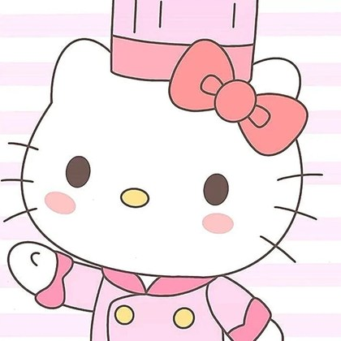
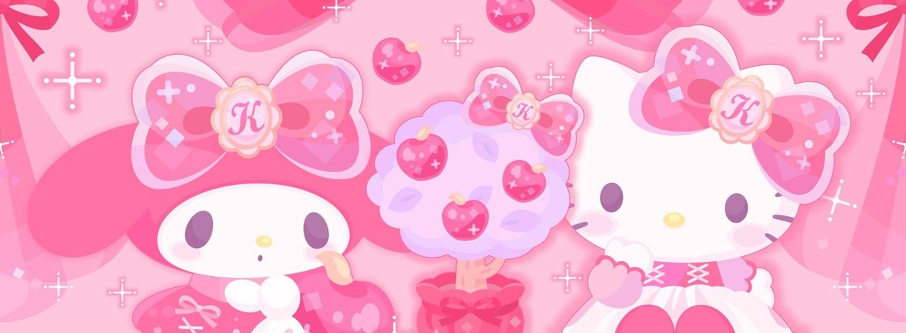
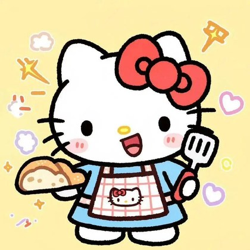

 |
| 角 色 档 案 |
| 本名 Kitty White 1974 年 11 月 1 日 生于伦敦 |
| 查看完整档案 >> |
 |
| 家 族 成 员 |
| 爸爸 George 妈妈 Mary 双胞胎妹妹 Mimmy |
| 认识她一家人 >> |
 |
| 粉 丝 留 言 |
| 写下你和她的故事 也可以只是来看看 |
| 去留言板说两句 >> |
|
Hello Kitty 粉 色 小 世 界 · 甜 心 收 藏 馆 |
首 页 ｜ 角色介绍 ｜ 留言板 |
 |
| 一只没有嘴巴的小猫，装下了全世界的少女心 |
| 欢迎来到 Hello Kitty 粉色小世界 · 这里收着她的小档案、她的家人、她的故事和一圈人的心事 |
|
|
|
| ◆ 站 内 公 告 |
|
|
| ◆ 粉 色 图 集 | 更多图片 >> |
 |
 |
 |
| ◆ 影 音 专 区 | 点击播放按钮即可观看与聆听 |
|
|||||||
|
这段旋律轻快又温柔，适合一边听一边翻她的档案。她从 1974 年走到今天，粉色从来就没换过。 |
| 首页 ｜ 角色介绍 ｜ 留言板 |
|
© 2019 - 2026 Hello Kitty 粉色小世界 保留所有权利 联系邮箱：hello@kittyworld.com ｜ 投稿合作：club@kittyworld.com |